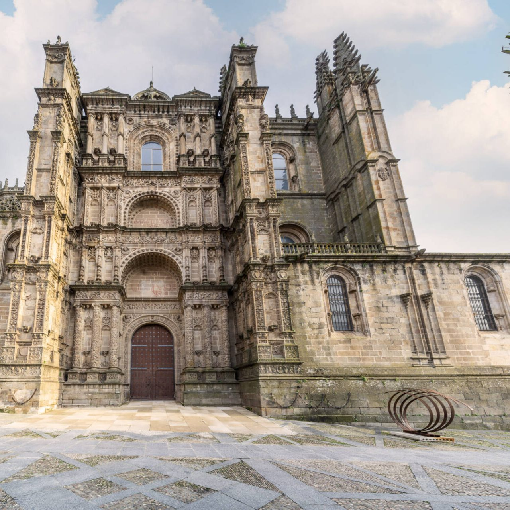
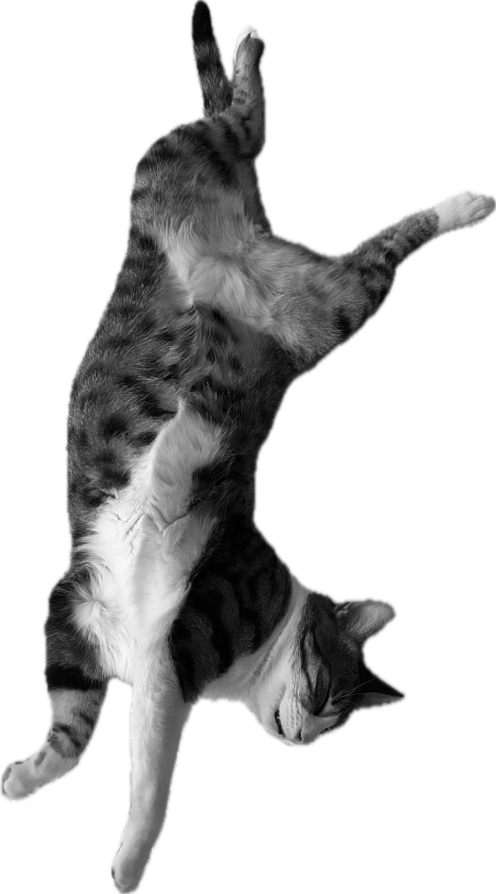
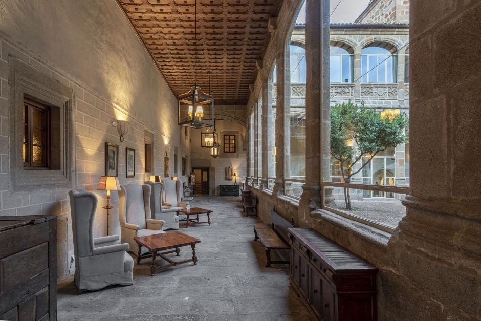

CEREMONIA
Catedral
Plaza de la Catedral
Plasencia
Un lugar muy especial donde dos catedrales se unen en una: la Vieja y la Nueva. ¡Y donde por fin nos daremos el sí, quiero!
nos casamos
29 DE MAYO 2027

por favor
Nos haría ilusión contar contigo. Antes del 1 de marzo, dinos si vienes.
Aquí, entre calles llenas de historias que nos vieron crecer y rincones que siempre serán casa, empezó todo. Sin grandes planes, sin imaginar demasiado, en una de esas noches de conversaciones interminables.
Un veintinueve de mayo que, sin saberlo, nos estaba cambiando la vida. Y que terminó convirtiéndose en una promesa; en nuestra forma de decirnos que sí, de elegirnos, de cuidarnos y de seguir encontrándonos, día tras día.
Catorce años después, volvemos a tener una cita con ese día y con esa ciudad. Pero esta vez queremos que formes parte de nuestro veintinueve.
Porque hay historias que empiezan siendo de dos, pero que no se entienden sin todas las personas que las acompañan. Y no imaginamos una forma más bonita de celebrar la nuestra que contigo.
Dos sitios, un mismo día.

CEREMONIA
Catedral
Plaza de la Catedral
Plasencia
Un lugar muy especial donde dos catedrales se unen en una: la Vieja y la Nueva. ¡Y donde por fin nos daremos el sí, quiero!

CELEBRACIÓN
Parador
Plaza de San Vicente Ferrer
Plasencia
Un antiguo convento del siglo XV convertido en un lugar lleno de magia. Claustros, piedra, galerías y rincones llenos de encanto para brindar, bailar y, ¡darlo todo!
BAR MERCADO
Plasencia
Aquí os esperamos con un poquito de flamenquito en directo, que siempre alegra el corazón, algo rico para picar y muchas ganas de veros.
Está todo al ladito de la Catedral, ¡así que no tiene pérdida!
Rocío 671233905
Jorge 686829459